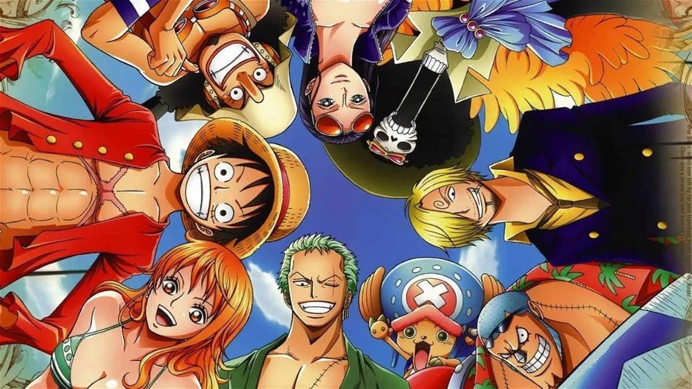

Mugiwaras
Los Mugiwaras, liderados por el intrépido Monkey D. Luffy, son una tripulación de piratas que ha cautivado a los corazones de millones de fans en todo el mundo a través de la obra maestra de Eiichiro Oda, 'One Piece'. Cada miembro de esta colorida y diversa tripulación aporta habilidades únicas, personalidades vibrantes y un profundo sentido de camaradería.